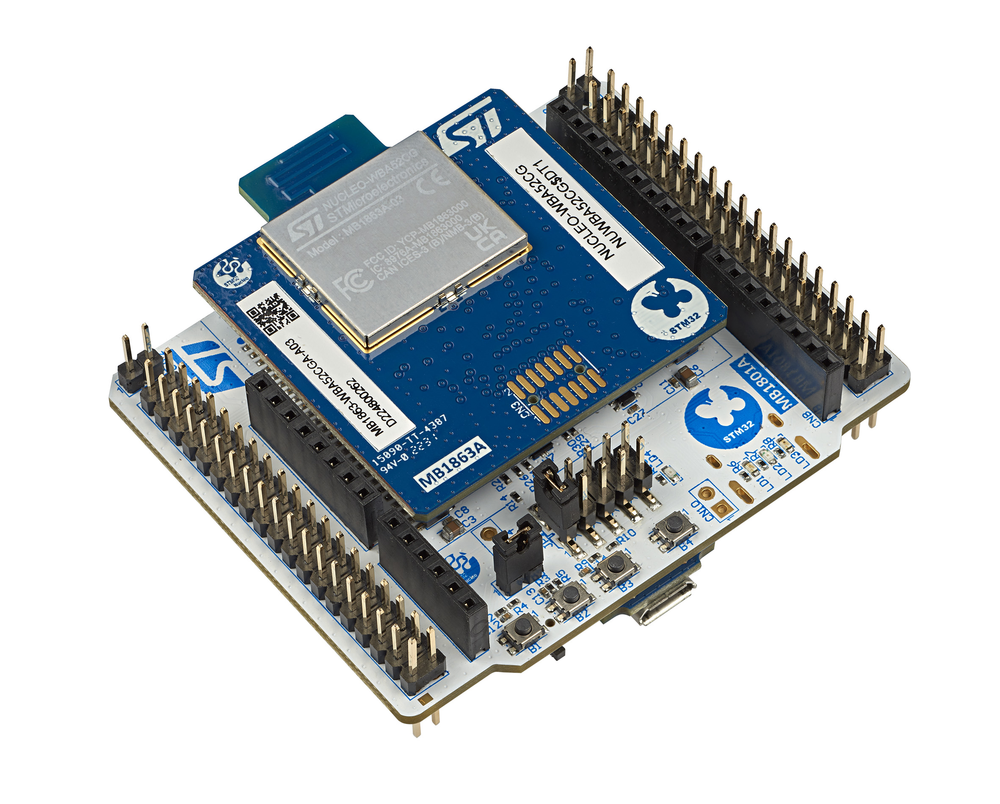
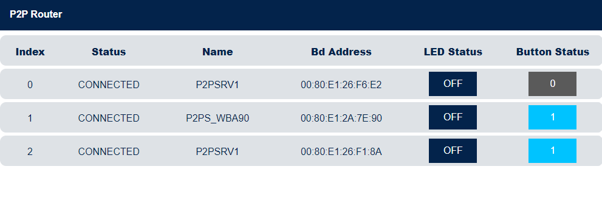

STM32WBA Web Bluetooth® App Interfaces
Introduction
This is a web interface created with React 18 and Bootstrap 5.
This web interface using Web Bluetooth® APIs can be used to establish a Bluetooth® LE connection and exchange data with a STM32WB board
STM32WBA firmware applications that could be downloaded to interact with Web Bluetooth application:
- P2Pserver
- HeartRate
- Firmware Update Over The Air
- Data Throughput
- P2Prouter
Example of the interface when a connection is established with Firmware Update Over The Air application and HeartRate application 
Setup
The following wiki page will help you to put in place the hardware setup.
Hardware requirements
To use the web interface, the following STM32WBA board is necessary .
A PC or a smartphone is required to open the web interface in a browser.
Software requirements
Flash stm32wb5x_BLE_Stack_full_fw.bin or stm32wb5x_BLE_Stack_light_fw.bin binary on the Wireless Coprocessor.
If it is not the case, STM32CubeProgrammer is needed to load the appropriate binary.
All available coprocessor wireless binaries are located here.
All available application binaries are available here.
Refer to UM2237 to learn how to install and use STM32CubeProgrammer.
For more information about Bluetooth® LE please refer to the STMicroelectronics BLE Wiki.
Usage
A github page hosting the web app is available here. No installation is required to use it this way.
You can host locally the server to update the source code, see Development mode section.
Development mode
To run the project in development mode, first be sure npm (node package manager) is installed on your machine.
Open a terminal and write the following command:npm -v
If npm is not installed on your machine, install Node.js then clone this repo and go to its root directory then proceed the following commands in a terminal:
To install all the dependencies:npm install
To start the application:npm start
Then open a compatible browser and go to http://localhost:3000
Browser compatibility with the API Web Bluetooth®.
On a desktop computer: Chrome, Edge and Opera browsers are compatible.
On a smartphone device: Chrome android is the only browser compatible.
See https://developer.mozilla.org/en-US/docs/Web/API/Web_Bluetooth_API documentation. You may need to enable experimental web platform features in your browser preference.
User's guide
P2Pserver
The P2Pserver application demonstrates a bidirectional BLE communication between a client and a server. The P2Pserver interface proposes a set of buttons to interact with the connected device. A reboot panel is available only if a P2Pserver service with the reboot OTA characteristic is detected on the device (see the Firmware Update Over The Air section to have more information related to OTA).
Requierements
Example with the NUCLEO-WBA52 board.
One of the following binary has to be flashed on the wireless coprocessor.
And this application binary file has to be flashed on the application coprocessor.
If you don't know how to update the coprocessors firmware, click here.
Follow the next steps to learn how to use the application P2Pserver
Step 1. Power on the STM32WB board with the Ota application flashed in and activate the bluetooth® on your machine.
Step 2. Open this web page in your browser.
Step 3. Click on the connect button then select P2PS_WBAxx in the device list and click pair.

Step 4. Click on P2Pserver to show the interface and don't hesitate to read the tooltips.
Your are now connected.
You can now interact with the connected device.
Firmware Update Over The Air (OTA)
The Firmware Update Over The Air (OTA) application allows a remote device to update the current application on the application coprocessor or to update the Wireless stack on the wireless coprocessor. Furthermore, the services which implements the reboot OTA characteristic are able to jump/reboot on the OTA application, thus allowing to update the application at your will.
Requierements
Example with the NUCLEO-WBA52 board.
One of the following binary has to be flashed on the wireless coprocessor.
And this application binary file has to be flashed on the application coprocessor.
Follow the next steps to learn how to use the application Firmware Update Over The Air.
Step 1. Power on the STM32WBA board with the Ota application flashed in and activate the bluetooth® on your machine.
Step 2. Open this web page in your browser.
Step 3. Click on the connect button then select your device list and click pair.
You are now connected
Step 5. Choose between updating the User Configuration Data and the Application.
Step 6. Select the binary to be downloaded. You can either fetch a binary file from the STMicroelectronics github repository STM32CubeWBA or upload a binary file stored on your machine.
Step 7. (Not mandatory) Choose the first sector address from which the file will be write.
Step 8. Click on the upload button and wait for the disconnection.
Congratulations, the new Application/Wireless stack is running and can be connected
If you have updated the old application with a new application implementing the characteristic reboot OTA, like BLE_p2pServer_ota_reference.bin or BLE_HeartRate_ota_reference.bin a panel permitting to restart on the OTA application is available. From this panel you can jump on the Firmware Update Over The Air application, then reboot on another application.
The section 4 of the panel (4. Range of sectors to delete) is not mandatory, the values are updated automaticaly.
HeartRate
The HeartRate application measures heart rate data and other information like the body sensor location and the energy expended. The HeartRate interface proposes a set of buttons and text input to interact with the connected device and a chart displaying the heart rate data received. A reboot panel is available only if a HeartRate service with the reboot OTA characteristic is detected on the device (see the Firmware Update Over The Air section to have more information related to OTA).
Requierements
Example with the NUCLEO-WBA52 board.
One of the following binary has to be flashed on the wireless coprocessor.
And this application binary file has to be flashed on the application coprocessor.
Follow the next steps to learn how to use the application HeartRate
Step 1. Power on the STM32WB board with the HeartRate application flashed in and activate the bluetooth® on your machine.
Step 2. Open this web page in your browser.
Step 3. Click on the connect button then select HRSTM in the device list and click pair.
You are now connected
Step 4. Click on HeartRate to show the interface and don't hesitate to read the tooltips.
You can now interact with the connected device.
Data Throughput
The Data Throughput application measures the upload (data transfer from web interface to the connected device) and download (data transfer from the connected device to the web interface) throughput between the web app and the connected device. The Data Throughput interface proposes two panels, one to display the uploaded data and the other the downloaded data. Each panel has a chart of the data throughput and a button to reset the chart, the upload panel has also a button to start or stop the uploading of data.
Requierements
Example with the NUCLEO-WBA52 board.
One of the following binary has to be flashed on the wireless coprocessor.
And this application binary file has to be flashed on the application coprocessor.
If you don't know how to update the coprocessors firmware, click here.
Follow the next steps to learn how to use the application Data Throughput
Step 1. Power on the STM32WB board with the Data Throughput application flashed in and activate the bluetooth® on your machine.
Step 2. Open this web page in your browser.
Step 3. Click on the connect button then select DT_SERVER in the device list and click pair.
You are now connected
Step 4. Click on Data Throughput to show the interface and don't hesitate to read the tooltips.
You can now interact with the connected device.
P2P Router
The P2Prouter application demonstrates STM32WBA acting at the same time as both: BLE central and peripheral, GATT server and client.
P2Prouter application scans to connect to P2Pserver devices and accept connection of ST Web Bluetooth app. It will route BLE messages received from both side.
Requierements
Example with one NUCLEO-WBA52 board as a P2Prouter, two NUCLEO-WBA52 and one P-NUCLEO-WB55 boards as P2Pserver.
You need a P2Prouter running on a STM32WBA52 and at least another STM32WBAxx / STM32WB Nucleo board to run a p2pServer application.
Follow the next steps to learn how to use the application P2Prouter
Step 1. Power the board with the p2pRouter application flash and the others boards running the P2Pserver apps.
Step 2. Activate the bluetooth® on your machine.
Step 3. Open this web page in your browser.
Step 4. Click on the connect button then select P2PR_WBAxx in the device list and click pair.
You are now connected
Step 5. Click on P2P Router to show the interface and click the Start button. You can now interact with the connected device.
Step 6. Power up to 7 p2pServer devices next to p2pRouter device.
Step 7. On each click on B1, p2pRouter will scan and then connect to a p2pServer device surrounding.
Step 8. On the Web Bluetooth interface you can see devices appearing. 
Step 9. On p2pServer device, a click on B1 send a notification to p2pRouter. This notification message is forwarded to the smartphone and displayed on the interface.  Step 10. On Web Bluetooth interface click the Light button to write a message to the corresponding p2pServer devices. This write message is sent first to p2pRouter and then routed to its destination. 
Troubleshooting
Caution : Issues and the pull-requests are not supported to submit problems or suggestions related to the software delivered in this repository. This example is being delivered as-is, and not necessarily supported by ST.
For any other question related to the product, the hardware performance or characteristics, the tools, the environment, you can submit it to the ST Community on the STM32 MCUs related page.